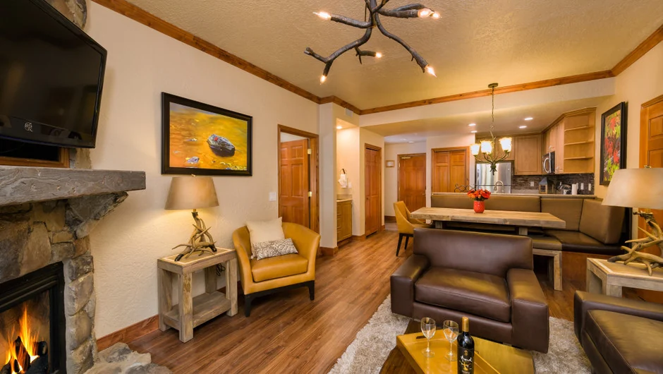

Most advice on how far ahead to book Park City for Presidents' Week 2027 counts backwards from the lodging, and it is written by the people selling the lodging. Counted properly, the first hard deadline of this winter is not a room. It is the Epic Pass going off sale in early December, and unlike a booking it does not come back.

Where the 2027 calendar sits
Presidents' Day 2027 falls on Monday 15 February, the third Monday of the month, listed federally as Washington's Birthday. Because it lands on a Monday there is no weekend shift to work around.
The ski week built around it runs Saturday 13 February to Saturday 20 February, the standard changeover for slopeside units. That puts the long weekend at the front of the week, which matters for arrival traffic and for the first two days of lift access.
Published in mid-November 2026, that Saturday is about thirteen weeks away. Our guide to why Presidents' Week sells out first covers the demand side; this one is about the order you do things in.
How far ahead lodging actually goes
The published lead times conflict. Park City property managers variously say guests book the Presidents' Day period in October, that the best large homes are gone by Thanksgiving, that six to nine months ahead is right for a rental home, and that three to five months is enough for a holiday weekend. One lodging guide simply says Presidents' Day books out through December.
Those figures come from businesses with an interest in early bookings, so the honest reading is the direction, not the number. What is consistent, and matches our own calendar, is that scarcity is concentrated by size: there are many hotel rooms in Park City and very few slopeside units that genuinely sleep eight, so the large units clear first.
If a group needs one unit for eight, mid-November is late enough to enquire now rather than compare for a fortnight. A couple wanting a hotel room has more latitude. Our guide to timing a peak-week booking covers committing early without taking on risk.
The deadline nobody counts backwards from
Epic Passes go off sale for the season in early December and do not come back. That is the deadline that binds in mid-November, and it is almost never mentioned in advice about booking a February ski week.
The exact 2026-27 date is not settled in the sources we could find. One roundup lists 6 December 2026. Another notes that as of late October no last day to buy had been announced, and that last season's sales closed on 4 December 2025. None of that is an official announcement, so check epicpass.com directly rather than trusting a roundup.
What is not in doubt is the shape of it: a decision made in the next few weeks determines what lift access costs in February. Our lift tickets and Epic Pass guide compares the products, and what ski-in ski-out actually costs sets it against the rest of the week's spending.
What 13 and 14 February mean for an Epic Local
There is a trap in the pass decision specific to this week. Epic's own restricted dates page lists 13 and 14 February 2027 as peak dates the Epic Local Pass cannot be used at Park City. Those are the first two days of the week.
The full Epic Pass has no blackout dates and is unrestricted on both. The Epic Local blackouts at Park City for 2026-27 are 27 and 28 November 2026, 26 to 31 December 2026, 16 January 2027, and 13 and 14 February 2027. Some sources say Epic Local holders can buy discounted tickets on blackout days, worth confirming with Epic rather than assuming.
So a family arriving on Saturday 13 February on Epic Local passes has bought the cheaper product and must buy two days of lift access anyway. Working that out in November is cheaper than working it out at the ticket window.

What else has a clock on it
Three other things carry real deadlines, in descending order of how badly they bite.
Airport transfers for a group are first. Peak-season capacity is reported to fill from December through March, and seat count is not the binding constraint — ski bags are. Operators qualify the same vehicles once equipment is involved, so quote bags as well as people. Our airport transfer guide covers that.
Ski school is second. Peak-week lesson places are finite and Presidents' Week is the busiest week of the season, so a child's lesson is worth booking alongside the lodging. Day lift tickets are third and least urgent: advance online pricing beats the walk-up window, and the guidance is to buy at least seven days out.
A countdown that works
| What | By when | Why that point |
|---|---|---|
| A unit that sleeps eight | Now | Scarcest category; large units clear long before rooms |
| Season pass decision | Early December 2026 | Epic sales close for the season and do not reopen |
| Airport transfer | December 2026 | Peak-season vehicle capacity fills December to March |
| Ski school places | December to January | Busiest week of the season; places are finite |
| Equipment rental | January 2027 | Reserving ahead beats the queue on the first morning |
| Day lift tickets | At least 7 days out | Advance pricing beats the walk-up window rate |
Read top to bottom, the list is simple: the lodging and the pass are the two decisions with no second chance, and only one is usually discussed. Everything below can be arranged in January. See the open week on the homepage, or read our guide to ski-in ski-out at Canyons Village for Presidents' Week 2027.
The week this guide is about
We own three Premier Two-Bedroom Villas inside Westgate Park City Resort, in Canyons Village. Each is 1,100 square feet — two king bedrooms, two queen sleeper sofas, sleeping eight — with a full kitchen, a kitchenette in the lock-off studio and two bathrooms with walk-in showers. Across all three, a group of up to 24 can stay in one resort.
We rent directly, owner to renter. Our open weeks for 2027 are Presidents' Week, 13 to 20 February, and spring break, 21 to 28 March. One enquiry, one person who answers it.
Common questions
When is Presidents' Week 2027 in Park City?
Presidents' Day 2027 falls on Monday 15 February, the third Monday of the month. The ski week built around it runs roughly from Saturday 13 February to Saturday 20 February, the standard changeover for slopeside lodging in Park City. Because the holiday lands on a Monday there is no weekend shift to account for, so the long weekend sits at the front of the week.
What books out first for Presidents' Week in Park City?
Family-sized slopeside units go first: there are far fewer of them than hotel rooms, and each is wanted by a whole group rather than a couple. Property managers describe the best large homes as gone by Thanksgiving and advise booking six to nine months ahead. Hotel rooms and standard condominiums last longer. Those lead times come from companies that benefit from early bookings, so treat them as a direction rather than a rule.
When does the Epic Pass stop being sold for the 2026-27 season?
In early December, but the exact date for 2026-27 is not something we could confirm. One roundup lists 6 December 2026; another notes that no last day to buy had been announced as of late October, and that the previous season's sales closed on 4 December 2025. Check epicpass.com before relying on those dates. The point that matters is that pass sales close for the season well before February and do not reopen.
Can an Epic Local Pass be used at Park City on 13 and 14 February 2027?
No. Epic's own restricted dates page lists 13 and 14 February 2027 as peak dates the Epic Local Pass cannot be used at Park City, alongside 27 and 28 November 2026, 26 to 31 December 2026 and 16 January 2027. The full Epic Pass has no blackouts and is unrestricted on those days. Some sources say Epic Local holders can buy discounted tickets on blackout dates, worth confirming with Epic before counting on it.
Is it too late to book Presidents' Week 2027 in November 2026?
No, but the category you are after decides how hard it is. Mid-November 2026 is about thirteen weeks out from 13 February 2027, and hotel rooms and smaller condominiums are still a normal booking at that range. A slopeside unit that sleeps eight is the scarcest category, worth enquiring about immediately rather than comparing for a fortnight. The pass decision is the urgent one, because on recent seasons' precedent that window closes in early December.